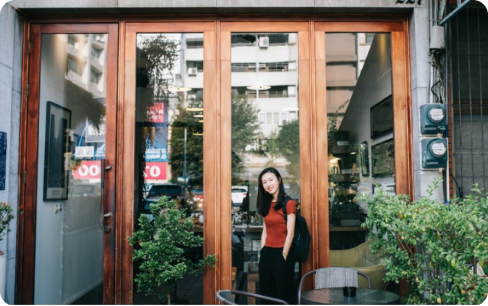
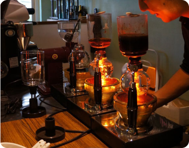
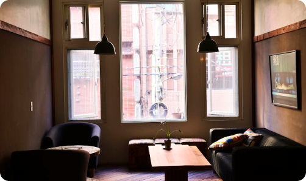
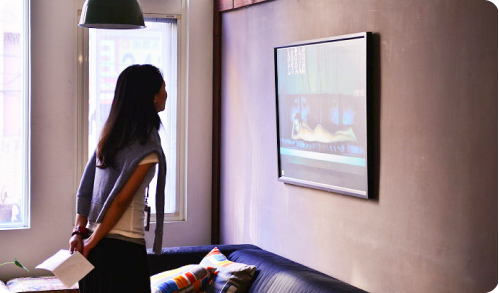
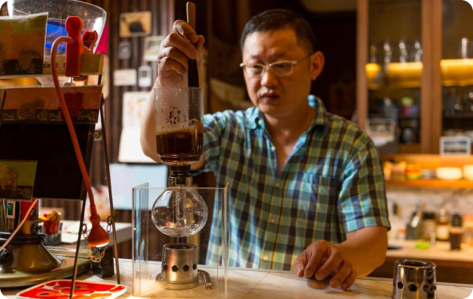
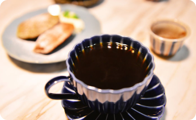
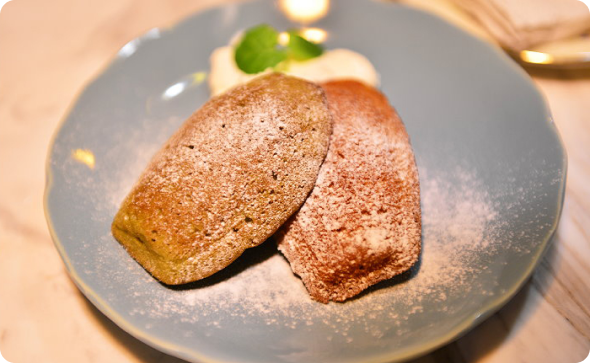

林依，在地生活28年，是樂團的主唱，也是旅遊部落格作家，就讓在地人來帶大家探訪神祕小店!
“說到基隆就不能不提到特別的咖啡文化了基隆可說是台灣最早的咖啡城市，早期的基隆”港是國際貿易最繁盛的港口，也是接觸西化最快速的地方，擁有發展歷史最久、最密集的咖啡廳。
基隆的咖啡文化有著獨特的韻味，用一杯賽風壺煮的咖啡醒醒頭腦，開始一天的生活，在基隆喝咖啡就是這麼生活化。
 金豆舊店的原址位於31號陸橋下，因想為客人帶來更完整的品嘗咖啡過程， 所以在現址開了一間有室內座位的店面，保留了房子原始的格局包含挑高的空間及巴洛克風的外觀。


二樓為展覽區，不定期會展出基隆相關的文藝展覽，是市中心這一帶少有的結合咖啡與文藝的店家在二樓晃晃，仍保有老屋的味道，窗外車水馬龍的吵雜聲似乎都被凍結了。


老闆煮的單品咖啡一定要試試，感受咖啡隨著溫度變化，氣味的轉變。


附上的小甜點，鬆軟微甜，搭配咖啡很棒，這樣子品味咖啡也算是給自己驚喜，來店內的你不仿也試試看。